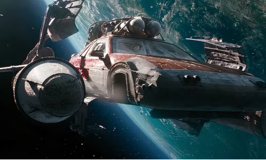
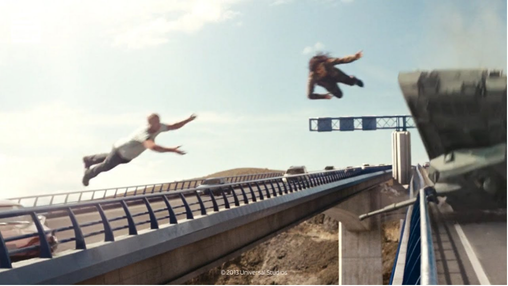
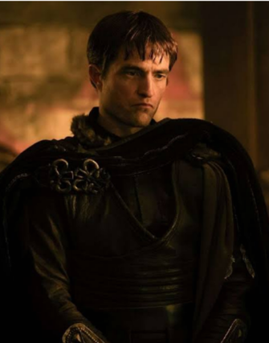
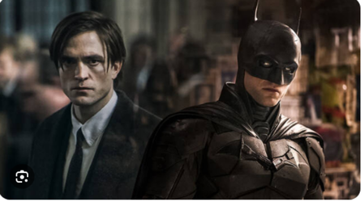

Movies contain different scenes that make them awesome. They create an entire world which makes us dream and expand our imagination. However, sometimes they can become so predictable, which is interpreted as a loss in its narration power and the capacity to create new ideas. Certainly, it depends on the kind of genre. For instance, we all love clichés in romantic or comedy films. Nevertheless, in drama movies we’d rather rest on a plot which surprises or shows us a totally new and exciting situation. Despite the result, we all love the magic of cinema. That’s why we’ll be looking at some predictable scenes or clichés that appear in some situations on the screen.
![A collage of five movie posters. At the top left, a Fast & Furious poster with the number 11 and an ensemble cast in front of a rainy city skyline. At the top right, the poster of Monster-in-Law, with the names Jennifer Lopez and Jane Fonda at the top and two smiling women and a man. At the bottom left, the poster of Wrong Turn: a dark forest scene with a frightened woman and a figure behind her. In the middle, the poster of Grown Ups, with the names Adam Sandler, Kevin James, Chris Rock, David Spade and Rob Schneider above men riding a water slide. At the bottom right, a superhero team poster with a group in capes on a stormy hill.](../assets/img/articles/w06-movie-posters.png)
Ten Hollywood Clichés
Tick the clichés you have already spotted on screen.
Overrated / Underrated
Overrated series: Fast and Furious
We all know that Fast and Furious is one of the most successful series in this century. Furthermore, in the first movies the plot was about racing and tuning. From that point on, it started to gain popularity. Thanks to that, the directors and producers wanted to add more “amazing content” to hook even more people to the theaters, For instance, make the main characters go to space, jump between two bridges with a tank, fight against terrorists, and save the world. Moreover, because of the popularity of the first movies, this content actually worked out.
Given the above, we consider that they achieved their goal of making a lot of money by making dumb movies.


Underrated actor: Robert Pattinson
what is your first thought when you hear about Robert Pattinson? if your answer is Twilight, you are probably underrating him. To those who have been living under a rock, Robert Pattinson is a British actor with a 22-year-career span who has been stereotyped as only a good-looking actor. Despite his recent serious roles, he is still being underrated by the general public. For instance, he was the protagonist of Batman, whose role was awesome because of his solemn performance. Apart from this, we have his most recent role as Antinoos in The Odyssey, which is being classified as one of the best movies in 2026. To sum up, Robert Pattinson is an actor who deserves to be more recognized.

